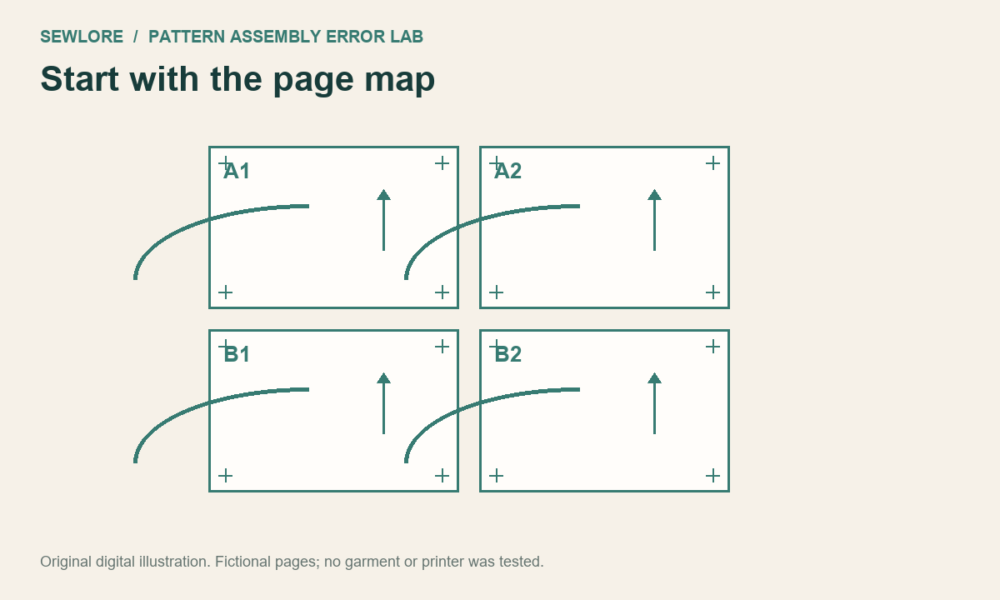

CASE 01
Start with the page map
What evidence tells you which pages belong together?
Use the designer's page map and page identifiers before matching a curve. Record the pattern name, version, size/layer and page range. Similar-looking lines can appear on different pattern pieces. In this fictional four-page map, the rows are A1-A2 and B1-B2.
Next check: Inventory every required page once. Confirm the orientation and version before taping.
Reveal the reasoning
The page map and identifiers, not a near-match in the outline.